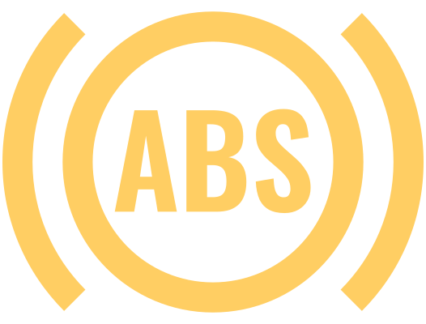

Niveau de liquide de frein trop bas

allumé

Ne reprenez pas la route !
Faites appel à l’assistance d’un atelier spécialisé.
Système de freinage et ABS perturbés

est allumé avec

Ne reprenez pas la route !
Faites appel à l’assistance d’un atelier spécialisé.
Garnitures de frein usées
allumé
Se rendre dans l’atelier spécialisé le plus proche en faisant preuve de prudence.
Augmentation de la température des freins

allumé
Message concernant les descentes constatées

Lors de la longue descente, les freins ont été fortement sollicités.
Il est possible de poursuivre le trajet avec précaution en utilisant l'effet de freinage du système de freinage à récupération d'énergie Récupération de l'énergie au freinage.

Plus l'état de charge de la batterie haute tension est élevé, plus la puissance du freinage régénératif est faible.
Si les freins sont fortement sollicités, il est possible que le ventilateur sous le capot avant se mette en marche pendant la conduite et après l'arrêt du véhicule.
Température élevée des freins

brille avec
Message concernant la température élevée des freins
Stationner le véhicule en toute sécurité.
Bloquez le véhicule avec le frein de stationnement et laissez le contact mis.
Attendre qu'un autre message concernant la surchauffe des freins et la nécessité de se rendre dans un atelier apparaisse.
Il est possible de continuer à conduire avec précaution.
Faites appel à l’assistance d’un atelier spécialisé.
Effet de freinage réduit
Des freins humides, gelés, recouverts de sel ou corrodés peuvent affecter l’effet de freinage et causer des vibrations et du bruit.
Nettoyer les freins à intervalles réguliers en freinant plusieurs fois dans le mode sélectionné
 lorsque les conditions de circulation le permettent.
lorsque les conditions de circulation le permettent.

Après la coupure du contact, le fonctionnement du servofrein est limité ou indisponible.
Appuyer plus fort sur la pédale de frein.